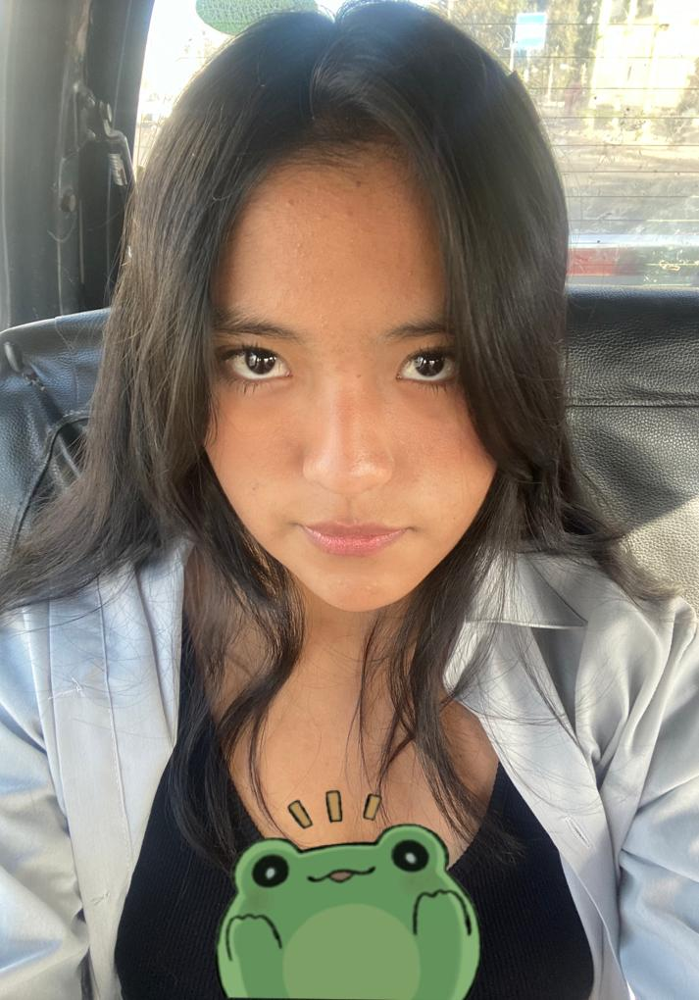

Mi nombre es Lin Abigail Guzman Gutierrez, tengo 18 años, soy de Arequipa, estoy estudiando la carrera de Diseño y desarrollo de Software en Tecsup.
Estoy entrando a mi tercer semestre y la verdad es que noté que me gusta más el lenguaje de Python. Gané el segundo lugar en el T&W-TECSUP-2022 en la categoría
"Mi carrera enamora" con el proyecto BLUE HT , como me encanta la idea de IA, este proyecto tenía relación con eso, soy una persona curiosa, me encanta estar
informada, por eso en mis tiempos libres me gusta revisar noticias. Luego de terminar mi carrera, entraré a Ingeniería industrial, porque me encanta la idea
de desarrollar y gestionar proyectos, cuento con un certificado en SCRUM, actualmente estoy siguiendo el idioma inglés en el básico 5, bueno el que toca
es el 6. Tengo muchas motivaciones, la principal es mi familia, mis padres se han encargado de formarme moralmente, agradezco mucho eso, porque gracias
a esa educación estoy aquí, sé que me falta mucho, aún estoy en camino, pero mis valores como responsabilidad, honestidad, empatía, gratitud y humildad
me ayudarán a lograr mis metas. Tengo en mente ser una maestra en proyectos, veo muchas oportunidades de negocio y me gustaría desarrollarlas todas.
Ahora entraré a una hackatón de la NASA, pienso esforzarme, luego viene el T&W-TECSUP-2023, estoy muy emocionada, aunque no sé si pueda presentar
el mismo proyecto, ya que ahora estará más optimizado, y bueno, esa soy yo, gracias.
